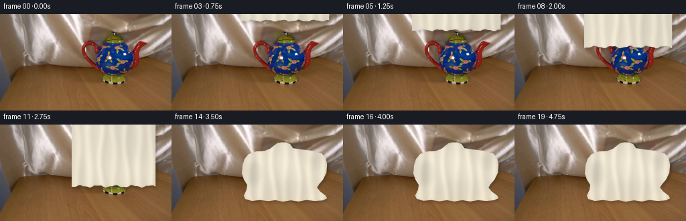
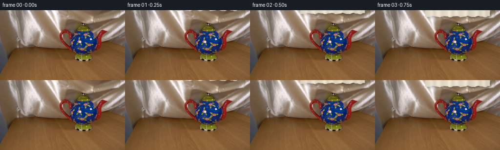
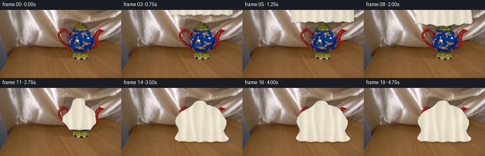

CODING AGENTS AS PIXEL WORLD MODELS
traex/GPT-5.6-Sol · 0157
点击播放 · 原生 RGB 像素
逐轮保存的候选
回放视频、检查图与代码变化。
每份候选均可单独播放。实际图片检查记录在下方工具轨迹中。
候选 01播放与检查图
点击播放 · 原生 RGB 像素

展开代码变化
--- 上一保存版本
+++ 本次保存版本
@@ -0,0 +1,187 @@
+"""Generate the requested locked-camera silk-over-teapot sequence.
+
+The animation is deliberately made from the supplied first frame: a softly
+shaded, finite piece of ivory silk enters from above, meets the lid, and then
+settles around the outline of the hidden teapot. Everything outside the
+cloth and its very soft cast shadow remains the original photograph.
+"""
+
+from pathlib import Path
+
+import cv2
+import numpy as np
+from PIL import Image, ImageDraw
+
+import artifact_io
+
+
+ROOT = Path(__file__).resolve().parent
+W, H = 256, 144
+S = 4 # supersampling for clean fabric edges
+WW, HH = W * S, H * S
+
+
+def smoothstep(x):
+ x = np.clip(x, 0.0, 1.0)
+ return x * x * (3.0 - 2.0 * x)
+
+
+def polygon_mask(points):
+ """Return a supersampled mask from coordinates given in output pixels."""
+ im = Image.new("L", (WW, HH), 0)
+ p = [(int(round(x * S)), int(round(y * S))) for x, y in points]
+ ImageDraw.Draw(im).polygon(p, fill=255)
+ return np.asarray(im, dtype=np.uint8)
+
+
+def hanging_mask(front_y):
+ """The scarf before it touches the lid, with a naturally rippled hem."""
+ xs = np.linspace(103.0, 235.0, 36)
+ hem = front_y + 1.15 * np.sin((xs - 102) * .27) + .55 * np.sin((xs - 100) * .61)
+ # The complete upper edge is above frame, making the first visible motion
+ # an unmistakable piece of fabric being lowered from above.
+ points = [(102.0, front_y - 59.0), (236.0, front_y - 59.0)]
+ points += list(zip(xs[::-1], hem[::-1]))
+ return polygon_mask(points)
+
+
+FINAL_OUTLINE = [
+ (164, 26.3), (171, 26.5), (177, 29), (181, 35),
+ (191, 38), (201, 42), (208, 47), (212, 54),
+ (217, 61), (222, 69), (222, 77), (219, 85),
+ (216, 91), (220, 99), (227, 106), (226, 110),
+ (221, 113), (212, 114), (201, 112.5), (190, 114.8),
+ (178, 113), (166, 115), (155, 112.8), (144, 114.2),
+ (132, 112.4), (121, 113), (114, 109), (113, 105),
+ (117, 98), (121, 91), (120, 85), (116, 78),
+ (114, 71), (116, 63), (120, 57), (125, 51),
+ (132, 47), (140, 43), (147, 39), (152, 34), (157, 28.5)
+]
+
+
+def settled_mask(frame_index):
+ """Small damped hem movement after the silk has come to rest."""
+ pts = []
+ amp = 0.0
+ if frame_index >= 14:
+ amp = 0.65 * np.exp(-(frame_index - 14) / 3.0) * np.sin((frame_index - 14) * 1.9)
+ for k, (x, y) in enumerate(FINAL_OUTLINE):
+ # Motion is confined to loose material near the table.
+ loose = smoothstep((y - 87.0) / 25.0)
+ pts.append((x + amp * loose * np.sin(k * 1.7),
+ y + amp * loose * np.cos(k * 1.23)))
+ return polygon_mask(pts)
+
+
+def signed_distance(mask):
+ inside = cv2.distanceTransform((mask > 127).astype(np.uint8), cv2.DIST_L2, 5)
+ outside = cv2.distanceTransform((mask <= 127).astype(np.uint8), cv2.DIST_L2, 5)
+ return inside - outside
+
+
+def cloth_mask(i):
+ """Animate lowering, contact, wrapping, and a short settling period."""
+ # Frames 1..6: leading edge moves from just outside the shot to the lid.
+ if i <= 6:
+ front = -4.5 + (i - 1) * 7.45
+ return hanging_mask(front)
+
+ final = settled_mask(i)
+ if i >= 14:
+ return final
+
+ # The material redistributes from the broad suspended scarf into the
+ # teapot-shaped drape. Signed-distance interpolation gives a smooth,
+ # organic contact instead of a simple cross-fade.
+ contact = hanging_mask(32.8)
+ a = smoothstep((i - 6.0) / 8.0)
+ phi = (1.0 - a) * signed_distance(contact) + a * signed_distance(final)
+ # Preserve antialiasing at the evolving contour.
+ return np.clip(128.0 + phi * 95.0, 0, 255).astype(np.uint8)
+
+
+def silk_texture(i, mask):
+ """Procedural ivory satin with broad folds and narrow specular ridges."""
+ yy, xx = np.mgrid[0:HH, 0:WW].astype(np.float32)
+ x, y = xx / S, yy / S
+
+ # The highlights travel down with the initially suspended material and
+ # become essentially stationary as it settles.
+ phase = min(i, 14) * 0.075
+ lum = np.full((HH, WW), 0.0, dtype=np.float32)
+ lum += 4.0 * np.sin(x * .050 + y * .016 + phase)
+ lum += 2.1 * np.sin(x * .145 - y * .010 + 1.1)
+
+ # Irregular fold pairs: each bright satin ridge has a soft shaded flank.
+ folds = [(116, 2.3, 4.8), (132, -1.4, 5.4), (151, 3.0, 4.1),
+ (169, -2.0, 5.0), (188, 2.5, 4.2), (207, -2.3, 5.5),
+ (225, 1.6, 3.9)]
+ for n, (c, bend, sig) in enumerate(folds):
+ curve = c + bend * np.sin(y * .055 + n * .8) + .018 * (y - 55)
+ d = x - curve
+ lum += (15.0 + (n % 3) * 2.0) * np.exp(-(d / sig) ** 2)
+ lum -= 10.0 * np.exp(-((d - sig * 1.15) / (sig * 1.35)) ** 2)
+
+ # Rounded volume where the cloth lies over the body and spout/handle.
+ body = np.exp(-(((x - 169) / 42) ** 2 + ((y - 70) / 33) ** 2))
+ lum += 9.0 * body - 5.0 * body * np.clip((x - 180) / 42, 0, 1)
+ lum += 6.0 * np.exp(-(((x - 207) / 17) ** 2 + ((y - 66) / 17) ** 2))
+ lum -= 5.0 * np.exp(-(((x - 121) / 12) ** 2 + ((y - 72) / 22) ** 2))
+
+ # Darkening close to an edge provides thickness without an outlined look.
+ inside = cv2.distanceTransform((mask > 20).astype(np.uint8), cv2.DIST_L2, 5) / S
+ lum -= 9.0 * np.exp(-inside / 1.8)
+
+ # Fine deterministic weave/noise, blurred in the vertical satin direction.
+ rng = np.random.default_rng(157)
+ noise = rng.normal(0, 1, (HH, WW)).astype(np.float32)
+ noise = cv2.GaussianBlur(noise, (3, 11), 0)
+ lum += noise * 2.2
+
+ base = np.array([226.0, 218.0, 199.0], dtype=np.float32)
+ tex = base[None, None, :] + lum[:, :, None] * np.array([1.0, .96, .84])[None, None, :]
+
+ # Warm reflected light from the table toward the lower hem.
+ warm = smoothstep((y - 87) / 30)[..., None]
+ tex += warm * np.array([4.0, 0.4, -3.0], dtype=np.float32)
+ return np.clip(tex, 0, 255).astype(np.uint8)
+
+
+def composite_frame(base, i):
+ mask_hi = cloth_mask(i)
+ if not np.any(mask_hi):
+ return base.copy()
+ tex_hi = silk_texture(i, mask_hi)
+
+ # A close, diffuse shadow makes the cloth visibly pass in front of the lid
+ # and later anchors the pooled hem to the wooden tabletop.
+ shifted = np.zeros_like(mask_hi)
+ dx, dy = 2 * S, 3 * S
+ shifted[dy:, dx:] = mask_hi[:-dy, :-dx]
+ shadow_hi = cv2.GaussianBlur(shifted, (0, 0), 2.0 * S)
+ shadow_a = cv2.resize(shadow_hi, (W, H), interpolation=cv2.INTER_AREA).astype(np.float32) / 255.0
+ shadow_a *= 0.18
+
+ out = base.astype(np.float32)
+ out *= (1.0 - shadow_a[..., None])
+
+ tex = cv2.resize(tex_hi, (W, H), interpolation=cv2.INTER_AREA).astype(np.float32)
+ alpha = cv2.resize(mask_hi, (W, H), interpolation=cv2.INTER_AREA).astype(np.float32) / 255.0
+ out = out * (1.0 - alpha[..., None]) + tex * alpha[..., None]
+ return np.clip(out + 0.5, 0, 255).astype(np.uint8)
+
+
+def main():
+ base = np.asarray(Image.open(ROOT / "first_frame.png").convert("RGB"), dtype=np.uint8)
+ assert base.shape == (H, W, 3)
+ frames = [base.copy()]
+ for i in range(1, 20):
+ frames.append(composite_frame(base, i))
+ frames = np.stack(frames).astype(np.uint8)
+ # Contract-critical: this must remain the supplied image byte-for-pixel.
+ assert np.array_equal(frames[0], base)
+ artifact_io.save(frames, ROOT)
+
+
+if __name__ == "__main__":
+ main()

候选 03播放与检查图
点击播放 · 原生 RGB 像素

展开代码变化
--- 上一保存版本
+++ 本次保存版本
@@ -47,15 +47,16 @@
FINAL_OUTLINE = [
(164, 26.3), (171, 26.5), (177, 29), (181, 35),
- (191, 38), (201, 42), (208, 47), (212, 54),
- (217, 61), (222, 69), (222, 77), (219, 85),
- (216, 91), (220, 99), (227, 106), (226, 110),
- (221, 113), (212, 114), (201, 112.5), (190, 114.8),
+ # The asymmetric shoulders are the cloth conforming to spout and handle.
+ (193, 37), (211, 39), (224, 43), (230, 50),
+ (232, 60), (231, 72), (226, 82), (220, 89),
+ (217, 94), (222, 100), (230, 106), (232, 110),
+ (226, 113), (214, 114), (201, 112.5), (190, 114.8),
(178, 113), (166, 115), (155, 112.8), (144, 114.2),
- (132, 112.4), (121, 113), (114, 109), (113, 105),
- (117, 98), (121, 91), (120, 85), (116, 78),
- (114, 71), (116, 63), (120, 57), (125, 51),
- (132, 47), (140, 43), (147, 39), (152, 34), (157, 28.5)
+ (132, 112.4), (120, 114), (110, 111), (108, 106),
+ (112, 97), (113, 90), (108, 82), (105, 73),
+ (106, 61), (109, 51), (115, 44), (126, 40),
+ (139, 39), (147, 36), (152, 32), (158, 27.5)
]
@@ -81,23 +82,31 @@
def cloth_mask(i):
"""Animate lowering, contact, wrapping, and a short settling period."""
- # Frames 1..6: leading edge moves from just outside the shot to the lid.
- if i <= 6:
- front = -4.5 + (i - 1) * 7.45
+ # Frames 1..7: leading edge moves from just outside the shot to the lid.
+ if i <= 7:
+ front = -4.5 + (i - 1) * 7.10
return hanging_mask(front)
final = settled_mask(i)
- if i >= 14:
+ if i >= 13:
return final
- # The material redistributes from the broad suspended scarf into the
- # teapot-shaped drape. Signed-distance interpolation gives a smooth,
- # organic contact instead of a simple cross-fade.
- contact = hanging_mask(32.8)
- a = smoothstep((i - 6.0) / 8.0)
- phi = (1.0 - a) * signed_distance(contact) + a * signed_distance(final)
- # Preserve antialiasing at the evolving contour.
- return np.clip(128.0 + phi * 95.0, 0, 255).astype(np.uint8)
+ # On contact the lower edge continues down while the sides draw inward
+ # around handle and spout. Keeping a single contiguous falling panel here
+ # is important: the cloth should never appear to dissolve through the pot.
+ front = {8: 49.0, 9: 63.0, 10: 78.0, 11: 92.0, 12: 106.0}[i]
+ side = {8: 104.0, 9: 105.0, 10: 106.0, 11: 107.0, 12: 108.0}[i]
+ right = {8: 235.0, 9: 234.0, 10: 233.0, 11: 232.0, 12: 232.0}[i]
+ top_y = -27.0 if i <= 10 else (-9.0 if i == 11 else 19.0)
+ xs = np.linspace(side, right, 38)
+ hem = front + 1.5 * np.sin((xs - 100) * .24) + .7 * np.sin(xs * .57)
+ # By frame 12 the cloth shoulder begins to arch over the lid.
+ if i == 12:
+ top = [(108, 19), (143, 19), (158, 25), (168, 25),
+ (180, 30), (202, 31), (232, 30)]
+ else:
+ top = [(side, top_y), (right, top_y)]
+ return polygon_mask(top + list(zip(xs[::-1], hem[::-1])))
def silk_texture(i, mask):
候选 04播放与检查图
候选 05播放与检查图
点击播放 · 原生 RGB 像素

展开代码变化
--- 上一保存版本
+++ 本次保存版本
@@ -72,6 +72,17 @@
pts.append((x + amp * loose * np.sin(k * 1.7),
y + amp * loose * np.cos(k * 1.23)))
return polygon_mask(pts)
+
+
+def settled_texture_mask(frame_index):
+ """Interior shade lobes which reveal the objects underneath the silk."""
+ im = Image.new("L", (WW, HH), 0)
+ d = ImageDraw.Draw(im)
+ # handle hollow, spout underside, body-bottom crease (softened below)
+ d.ellipse((111*S, 54*S, 136*S, 91*S), fill=175)
+ d.polygon([(202*S, 48*S), (231*S, 43*S), (223*S, 63*S), (211*S, 72*S)], fill=145)
+ d.ellipse((132*S, 83*S, 210*S, 112*S), fill=55)
+ return cv2.GaussianBlur(np.asarray(im, dtype=np.uint8), (0, 0), 4.0*S)
def signed_distance(mask):
@@ -137,6 +148,13 @@
lum += 6.0 * np.exp(-(((x - 207) / 17) ** 2 + ((y - 66) / 17) ** 2))
lum -= 5.0 * np.exp(-(((x - 121) / 12) ** 2 + ((y - 72) / 22) ** 2))
+ if i >= 13:
+ relief = settled_texture_mask(i).astype(np.float32) / 255.0
+ # Strong occlusion beneath the handle loop and spout overhang gives
+ # the final drape an immediately readable teapot silhouette.
+ lum -= relief * 20.0
+ lum += 7.0 * np.exp(-(((x - 171) / 29) ** 2 + ((y - 54) / 18) ** 2))
+
# Darkening close to an edge provides thickness without an outlined look.
inside = cv2.distanceTransform((mask > 20).astype(np.uint8), cv2.DIST_L2, 5) / S
lum -= 9.0 * np.exp(-inside / 1.8)
候选 06播放与检查图
点击播放 · 原生 RGB 像素

展开代码变化
--- 上一保存版本
+++ 本次保存版本
@@ -95,7 +95,7 @@
"""Animate lowering, contact, wrapping, and a short settling period."""
# Frames 1..7: leading edge moves from just outside the shot to the lid.
if i <= 7:
- front = -4.5 + (i - 1) * 7.10
+ front = 0.5 + (i - 1) * 6.27
return hanging_mask(front)
final = settled_mask(i)
可观测工具轨迹
实际执行的命令与返回图片。
命令 1exit 0
/bin/bash -lc 'cat GENERATION_RULES.md'
命令 2exit 0
/bin/bash -lc "cat prompt.txt && printf '\\n---FILES---\\n' && find . -maxdepth 2 -type f -printf '%p %s bytes\\n' | sort"
命令 3exit 0
/bin/bash -lc "which ffmpeg; ffmpeg -version | head -3; python3 - <<'PY' import importlib.util for m in ['cv2','PIL','numpy','torch','diffusers','imageio','skimage']: print(m, bool(importlib.util.find_spec(m))) PY"
命令 4exit 0
/bin/bash -lc 'cat artifact_io.py'
命令 5exit 0
/bin/bash -lc "python3 - <<'PY'
from PIL import Image
im=Image.open('first_frame.png'); print(im.mode,im.size)
PY"命令 6exit 0
/bin/bash -lc 'python3 generate.py'
命令 7exit 0
/bin/bash -lc 'python3 generate.py'
命令 8exit 0
/bin/bash -lc "python3 generate.py && python3 - <<'PY'
import numpy as np
from PIL import Image
z=np.load('pixels.npz')['pixels']
a=np.array(Image.open('first_frame.png')).astype(np.uint32)
p=(a[:,:,0]<<16)|(a[:,:,1]<<8)|a[:,:,2]
print('pixels',z.shape,z.dtype,'frame0 exact',np.array_equal(z[:,:,0],p),'frames',len(list(__import__('pathlib').Path('frames').glob('*.png'))))
print('changed per frame', [int(np.sum(z[:,:,i]"'!=z[:,:,i-1])) for i in range(1,20)])
PY'命令 9exit 0
/bin/bash -lc "python3 generate.py && python3 - <<'PY'
import numpy as np
from PIL import Image
z=np.load('pixels.npz')['pixels']; a=np.array(Image.open('first_frame.png')).astype(np.uint32); p=(a[:,:,0]<<16)|(a[:,:,1]<<8)|a[:,:,2]
print(z.shape, z.dtype, np.array_equal(z[:,:,0],p), [int(np.sum(z[:,:,i]"'!=z[:,:,i-1])) for i in range(1,4)])
PY'视觉工具实际返回图片 1

视觉工具实际返回图片 2

视觉工具实际返回图片 3

保存候选 6 份；完成命令 9 次；可验证图片返回 3 张。原始 API 响应与完整日志保留在本地。